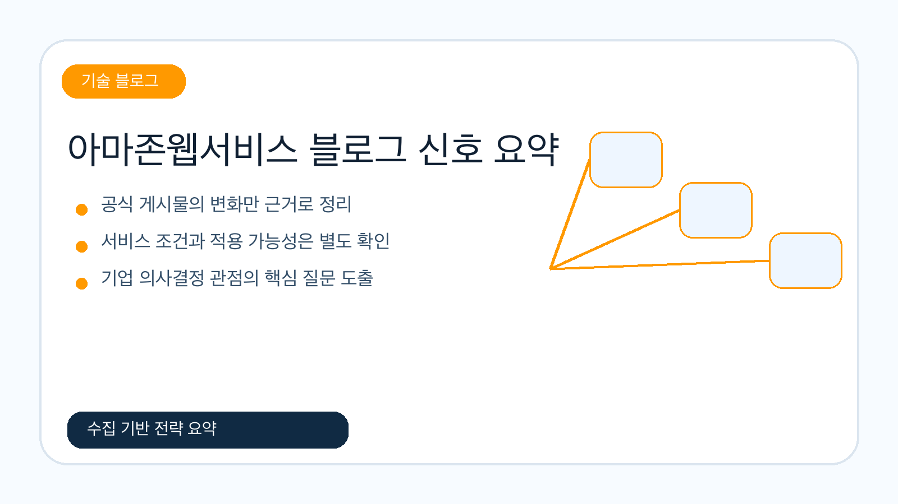
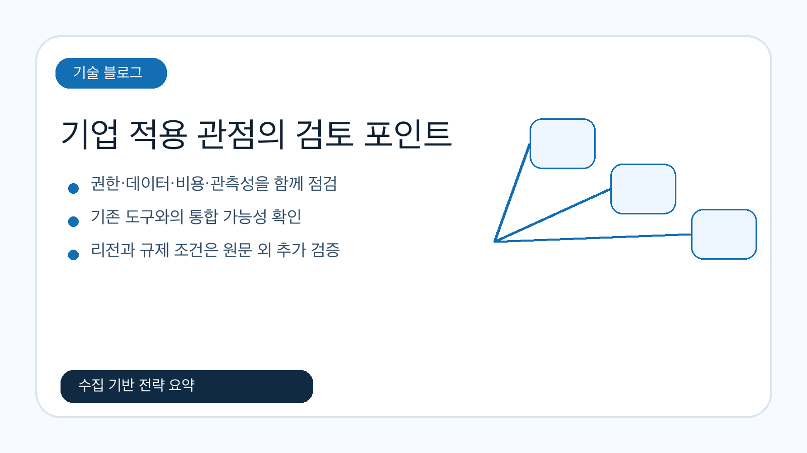
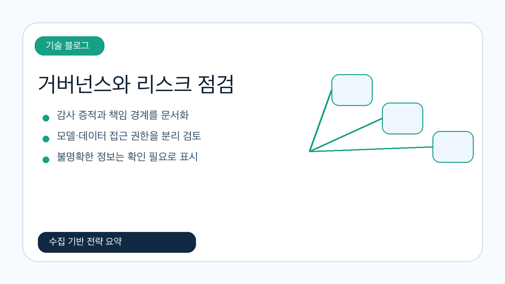

아마존 베드록 에이전트코어의 웹 검색 기능 소개
아마존 베드록 에이전트코어의 웹 검색 기능은 에이전트가 최신 웹 정보를 참고해 답변 근거를 보강하도록 돕는 업데이트입니다. 기업은 검색 대상, 권한, 감사 로그, 비용 기준을 함께 확인해야 합니다.
원문 보기수집일 2026-06-20 07:04:15 한국시간
공식 피드와 로컬 지식 저장소를 기준으로 확인한 게시물을 바탕으로, 기업 인공지능·데이터·클라우드 의사결정자가 볼 변화와 검토 포인트를 정리했습니다.
이번 실행에서 신규 저장한 문서를 기본 입력으로 사용했습니다.

공식 블로그 기반 수집 신호를 기업 의사결정 관점으로 재구성했습니다.
아마존 베드록 에이전트코어의 웹 검색 기능은 에이전트가 최신 웹 정보를 참고해 답변 근거를 보강하도록 돕는 업데이트입니다. 기업은 검색 대상, 권한, 감사 로그, 비용 기준을 함께 확인해야 합니다.
원문 보기어도비 마케팅 에이전트와 아마존 큐를 활용해 캠페인 인사이트 수집과 업무 흐름을 빠르게 만드는 사례입니다. 마케팅 데이터 접근 권한, 지식 연결, 결과 검증 절차가 주요 검토 포인트입니다.
원문 보기세이지메이커 세부 지표와 클라우드워치 인사이트 대시보드를 통해 생성형 인공지능 추론을 모니터링하고 디버깅하는 내용입니다. 지연시간, 오류, 비용, 추적성을 함께 확인해야 합니다.
원문 보기신규 또는 최근 로컬 아마존웹서비스 마크다운 문서를 사용했습니다. 데이터 부족 시 최신성은 별도 확인이 필요합니다.
본문과 요약에서 반복적으로 포착된 서비스명을 집계했습니다. 서비스명 추출은 원문 표현 기준입니다.
기술 변화, 기업 적용성, 거버넌스·리스크를 중심으로 정리했습니다.
수집 자료에서 확인되는 변화는 특정 단일 제품 발표보다, 클라우드 서비스와 인공지능·데이터 기능이 실제 업무 흐름에 연결되는 접점이 넓어지고 있다는 점입니다. 다만 이번 실행 데이터만으로 시장 전체의 방향을 단정하지 않고, 원문에서 확인 가능한 서비스 업데이트와 사용 사례 중심으로 해석했습니다.
기업 의사결정자는 새 기능의 매력보다 먼저 기존 권한 체계, 데이터 위치, 관측성, 비용 배분 기준에 맞는지 확인해야 합니다.

| 서비스·기술 | 언급 수 | 의사결정 관점 |
|---|---|---|
| 아마존 베드록 에이전트코어 | 2 | 에이전트가 외부 정보와 내부 지식을 함께 활용할 때 권한·감사·비용 기준을 확인해야 합니다. |
| 아마존 세이지메이커 | 1 | 생성형 인공지능 추론 관측성을 높일 수 있으나 지표 범위와 비용 영향은 원문 조건을 재확인해야 합니다. |
| 아마존 클라우드워치 | 1 | 운영 지표와 대시보드를 활용한 장애 분석 가능성을 검토할 수 있습니다. |
| 아마존 큐 | 1 | 업무 대화 안에서 캠페인 인사이트를 활용하는 방식의 권한과 지식 연결 범위를 확인해야 합니다. |
| 어도비 마케팅 에이전트 | 1 | 외부 마케팅 도구와 클라우드 지식 서비스의 통합 거버넌스를 검토해야 합니다. |
관찰된 게시물이 실제 도입 후보가 되려면, 기능 목록이 아니라 운영 조건과 통합 조건이 먼저 확인되어야 합니다. 특히 계정·권한 모델, 네트워크 경계, 데이터 보존 정책, 감사 로그 확보 가능성은 초기 검토 항목입니다.
한국 기업은 글로벌 발표와 국내 리전·규제·계약 조건 사이의 차이를 확인해야 합니다. 원문에서 국내 적용 사례나 리전 지원이 명시되지 않은 항목은 확인 필요로 두는 것이 안전합니다.
이번 데이터에 기반한 실행 전략은 고정된 30일·60일·90일 로드맵이 아니라, 검증 가능한 판단 질문으로 정리합니다.
인공지능·데이터·클라우드 기능은 빠르게 확장되지만, 원문만으로 보안 통제 수준이나 비용 영향을 완전히 판단하기 어렵습니다. 따라서 적용 전에는 책임 경계, 감사 증적, 모델·데이터 접근 권한, 장애 시 우회 절차를 문서화해야 합니다.

프롬프트 원문은 같은 산출물 폴더의 이미지 프롬프트 기록 파일에 보존했습니다. HTML에는 목적과 위치만 요약합니다.